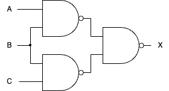
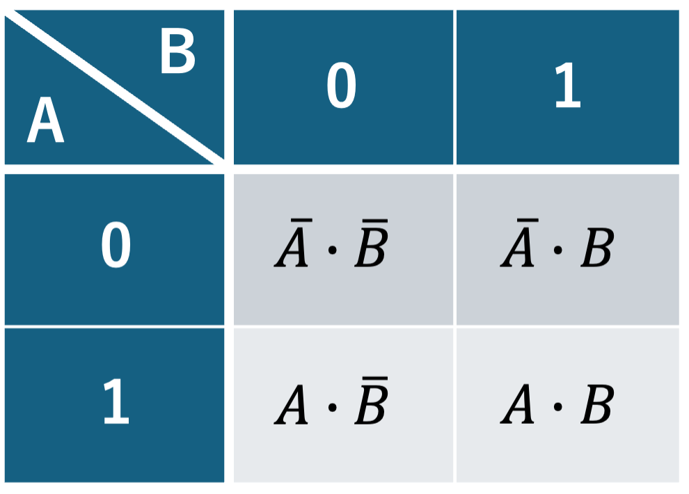
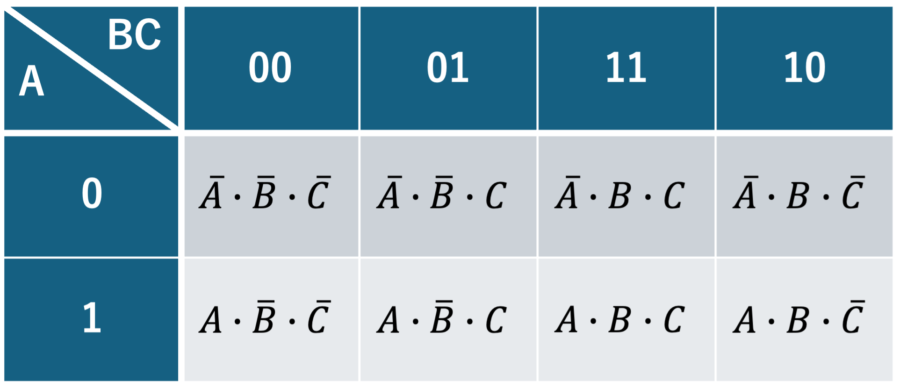

4. カルノー図による組合せ回路の設計法#
到達目標
カルノー図（2〜4変数、拡張で5〜6変数）の描き方とグレイコード配置を説明できる。
1,2,4,8セルのグルーピング規則とドントケアの扱いを理解し、最小SOP/POSを導出できる。
最小化結果をゲート実装（NAND–NAND / NOR–NOR）につなげられる。
今日の問い
カルノー図は何を“視覚的に”最小化しているのか。
どのようにセルをまとめれば項数・リテラル数を減らせるのか。
ドントケアはいつ、どのように使うのが得か。
キーワード
カルノー図（K-map）
グレイコード、隣接、折り返し
グルーピング、素因子、本質素因子
ドントケア（don’t care）
4.1. 復習（第3回）#
用語 |
意味 |
例 |
|---|---|---|
最小項 (min term) |
使用する全ての論理変数またはその否定の論理積 |
|
最大項 (max term) |
使用する全ての論理変数またはその否定の論理和 |
|
主加法標準形 (sum of products) |
最小項の論理和 |
|
主乗法標準形 (product of sums) |
最大項の論理積 |
主加法標準形 ← 出力が1となる行の最小項の和
主乗法標準形 ← 出力が0となる行の最大項の積
Tip
例
次の真理値表で与えられる論理変数\(F\)を主加法標準形・主乗法標準形で表すと，
A |
B |
C |
\(F(A,B,C)\) |
|---|---|---|---|
0 |
0 |
0 |
1 |
0 |
0 |
1 |
1 |
0 |
1 |
0 |
0 |
0 |
1 |
1 |
1 |
1 |
0 |
0 |
0 |
1 |
0 |
1 |
1 |
1 |
1 |
0 |
0 |
1 |
1 |
1 |
1 |
Note
第3回演習3 - 解答例
次の論理式を実現する論理回路について
ANDゲートとORゲートを用いて構成せよ．

NANDゲートのみを用いて構成せよ．

標準形は正しいが冗長になりがち → 簡略化する方法の一つがカルノー図
4.1.1. 加法標準形と乗法標準形との変換#
次の分配則に基づいて展開すれば良い．
\(A \cdot (B+C) = A \cdot B + A \cdot C\)
\(A+B \cdot C = (A+B) \cdot (A+C)\)
Tip
例
加法標準形 \((A \cdot B) + (A \cdot \overline{B})\) を分配則 \(A+B \cdot C = (A+B) \cdot (A+C)\) に従って展開すると
乗法標準形 \((A + B) \cdot (A + \overline{B})\) を分配則 \(A \cdot (B + C) = (A \cdot B) + (A \cdot C)\) に従って展開すると
4.2. カルノー図 (Karnaugh map)#
カルノー図：論理回路を簡単化するための図表
4.2.1. グレイコード配置#
カルノー図ではグレイコード配置に従って表を作成する．
ハミング距離：同じ長さのビット列について，同じ位置の符号が異なってる箇所の数．
例：
01と00のハミング距離は1例：
010101と001001のハミング距離は2
グレイコード配置：前後に隣接する符号間のハミング距離が必ず1となるような，数値の符号化法．
2変数：行を\(A=0,1\)，列を\(B=0,1\)とする．
3変数：行を\(A=0,1\)，列を\(BC=00,01,11,10\)とする．\(BC\)の隣接は1ビット差が原則． 
4変数：行を\(AB=00,01,11,10\)，列を\(CD=00,01,11,10\)とする．

四辺は周期的に隣接している（上下・左右・四隅も隣接）．
4.2.2. カルノー図の描き方#
与えられた論理式が加法標準形か乗法標準形かで分類する．
加法標準形の場合
主加法標準形に変換する．
各最小項に対応する区画に1を入れる．
乗法標準形の場合
加法標準形に変換する．（分配則）
以下，加法標準形の場合と同様．
Tip
例
次の論理式\(F\)のカルノー図を作成する．
加法標準形なので主加法標準形に変換する． \(A \cdot C = A \cdot (B+\overline{B}) \cdot C = A \cdot B \cdot C + A \cdot \overline{B} \cdot C\)であるから，
カルノー図は

Note
演習1
次の論理式\(G\)のカルノー図を作成せよ．
4.2.3. カルノー図を用いた論理式の簡略化#
与えられた論理式のカルノー図を作成する．（前節）
1の区画をなるべく大きいグループで区分けする．
グループは含む区画の数が 2の冪（1,2,4,8,16） となるような，長方形または正方形をした区画のまとまり
グループの大きさを順に小さくし，区分けされなかった区画を含むようにグループによる区分けを行う．ただし，区画は複数のグループに属しても良い．
得られたグループを表す論理式の和として元の論理式の簡略化が得られる．
Warning
グループによる区分けは一意ではなく，複数の区分けの仕方が存在する．
Tip
1以外の区画（0の区画）をグループで区分けすると，乗法標準形としての表現を得る．
Tip
例
論理式 \(F = \overline{A} \cdot B \cdot C + A \cdot B \cdot \overline{C} + \overline{A} \cdot B \cdot \overline{C} + A \cdot C\) のカルノー図は次のように描ける．
このとき論理式\(F\)の簡略化を試みる． このカルノー図は例えば次のように区分けでき，対応する論理式の和として簡略化できる．

従って，\(F = A \cdot C + B\)となる．
Note
演習2
演習1で作成した，論理式 \(G = \overline{A} \cdot B \cdot \overline{C} \cdot D + \overline{A} \cdot B \cdot C + A \cdot B \cdot C \cdot \overline{D} + A \cdot B \cdot D\) のカルノー図を元に，この論理式\(G\)の簡略化を試みよ．
4.2.4. 簡略化した論理式を用いたNAND回路の構成#
簡略化した論理式に2重否定を施し，内側の否定についてド・モルガンの法則を適用する．
Tip
例
論理式 \(F = \overline{A} \cdot B \cdot C + A \cdot B \cdot \overline{C} + \overline{A} \cdot B \cdot \overline{C} + A \cdot C\) は \(F = A \cdot C + B\) と簡略化できたが，これをNAND回路として実装する．
右辺の二重否定を取り，ド・モルガンの法則に従って展開すれば
これを論理回路に実装すれば次のようになる．

Note
演習3
論理式 \(G = \overline{A} \cdot B \cdot \overline{C} \cdot D + \overline{A} \cdot B \cdot C + A \cdot B \cdot C \cdot \overline{D} + A \cdot B \cdot D\) は \(G = B \cdot C + B \cdot D = B \cdot (C + D)\) と簡略化できたが，これをNAND回路として実装せよ．
\(G = B \cdot C + B \cdot D\)の二重否定を取り，ド・モルガンの法則に従って展開すれば
これを論理回路に実装すれば次のようになる．
4.3. まとめ#
4.3.1. 復習#
加法標準形の論理式が与えられたときに，これを簡略化してNAND回路を構成するまでの一連の手続きを箇条書きしてください．
グレイコードを使う理由を考えてみてください．例えばグレイコードではない例として，行を\(A=0,1\)，列を\(BC=00,01,10,11\)としたときの図表ではどのような不便が生じるでしょうか．